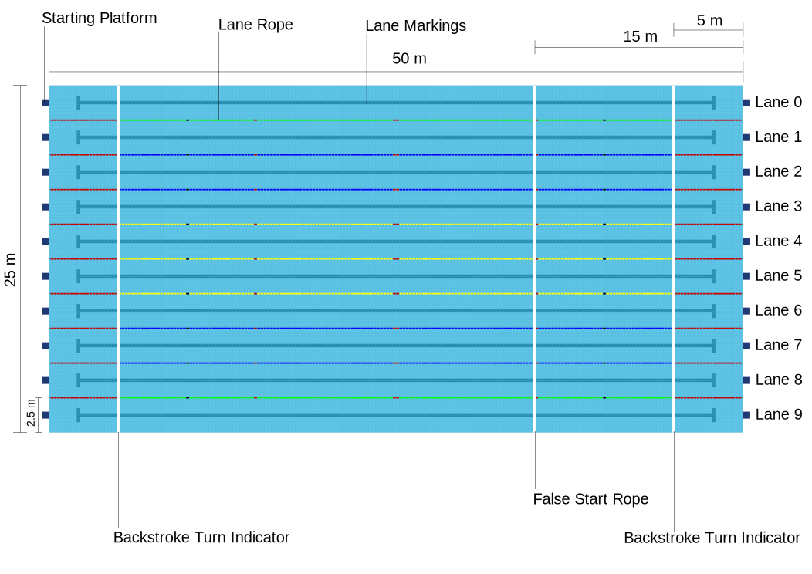
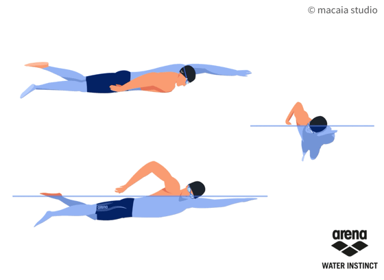

La natación es supervisada por World Aquatics desde 1908, conocida entonces como FINA (Federación Internacional de Natación) nombre que mantuvo hasta 2022. Al igual que en el atletismo, este deporte busca alcanzar la máxima velocidad en cada distancia, y con el tiempo se ha estructurado en cuatro estilos de nado reglamentados, que se diferencian principalmente por la coordinación y el movimiento de brazos y piernas. Aunque se considera un deporte individual, también existe la categoría de relevos que lo vuelve también un deporte por equipos. Además, se suele formar un fuerte sentido de equipo entre quienes entrenan juntos, debido al apoyo psicológico y motivacional que brinda la presencia de compañeros durante las prácticas.
línea de timepo estreno de las pruebas
Para los juegos olimpicos 2028 se incorporan las pruebas de 50m para cada estilo, los cuales son espalda, pecho y mariposa, además del 4to estilo, crol (o crawl)

Piscina
Las dimeciones para una piscina olímpica estan reglamentadas según world aquatics.
- Debe medir 50 metros de largo por 25 metros de ancho.
- Debe tener 10 carriles, cada uno de 2.5 metros de ancho, donde se utilizarán los 8 centrales para las competiciones (dejando los carriles 1 y 10 como espacios para minimizar las olas).
- La profundidad mínima debe ser de 2 metros
- Backstroke turn indicator: banderines colocados a no menos de 1,2 metros sobre el nivel del agua a 5 metros de la pared.
- False start rope: cuerda colocada a no menos de 1,2 metros sobre el nivel del agua, a 15 metros ddelante del extremo de salida.
¿Con los años, las competencias cuentan con mayor tecnología para asegurar el registro de tiempos.
Si bien no todas las competencias pueden tener todos los implementos, los minimos que encontrarás en competencias oficiales será el Touchpad junto a un cronometrista humano. Anteriormente se tenía a 2 o incluso 3 cronometristas
supervisando y registrando el tiempo
De los 4 estilos de nado, 3 tienen sus propias categorías; espalda, pecho y mariposa. la 4ta categoría de competencia es estillo libre (freestyle) lo cual implica que puede ser realizado de cualquier forma mientras cumpla las reglas mínimas. Actualmente siempre se ve el estilo crol en competencias, con algunas exepciones
Reglamento general
1- la cabeda de los nadadores debe salir antes de los 15 metros tras la entrada al agua y cada impulso de la pared 2- al moomento de dar las vueltas se debe tocar la pared con alguna parte del cuerpo 3- No se debe tocar/agarrar los divisores de linea

Crol / Crawl
El estilo crol es el considerado el más eficiente, el más rápido gastando menos energía. según el reglamento


{kind=link}